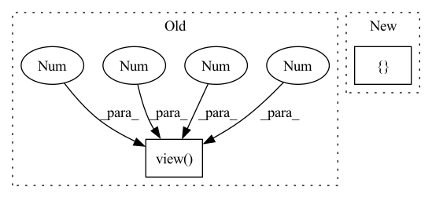

Pattern ID :1049

Before Change
self.grid = [torch.zeros(1)] * self.nl // init grid
a = torch.tensor(anchors).float().view(self.nl, -1, 2)
self.register_buffer("anchors", a) // shape(nl,na,2)
self.register_buffer("anchor_grid", a.clone().view(self.nl, 1, -1, 1, 1, 2)) // shape(nl,1,na,1,1,2)
self.m = nn.ModuleList(nn.Conv2d(x, self.no * self.na, 1) for x in ch) // output conv
self.inplace = inplace // use in-place ops (e.g. slice assignment)
After Change
self.nl = len(anchors) // number of detection layers
self.na = len(anchors[0]) // 2 // number of anchors
self.grid = [torch.zeros(1)] * self.nl // init grid
self.anchor_grid = [torch.zeros(1)] * self.nl // init anchor grid
self.register_buffer("anchors", torch.tensor(anchors).float().view(self.nl, -1, 2)) // shape(nl,na,2)
self.m = nn.ModuleList(nn.Conv2d(x, self.no * self.na, 1) for x in ch) // output conv
self.inplace = inplace // use in-place ops (e.g. slice assignment)
In pattern: SUPERPATTERN
Frequency: 3
Non-data size: 2
Instances
Fragment ID: 2091679
Project Name: ultralytics/yolov5
Commit Name: 9d75e42f9811718a1f5a821f2425484524df074f
Time: 2021-10-11
Author: njebastin10@gmail.com
File Name: models/yolo.py
Class Name: Detect
Method Name: __init__
Parent Class: nn.Module
Fragment ID: 2091643
Project Name: lornatang/esrgan-pytorch
Commit Name: a9031d71f6f27449fe63ec703344577e35fa87cb
Time: 2022-04-15
Author: liuchangyu1111@gmail.com
File Name: model.py
Class Name: ContentLoss
Method Name: __init__
Parent Class: nn.Module
Fragment ID: 2091667
Project Name: pooya-mohammadi/deep_utils
Commit Name: 7d442fe6eef7ccd63661e0463e87358ff795d709
Time: 2021-11-26
Author: practical.ai.programming@gmail.com
File Name: deep_utils/vision/object_detection/yolo/v5/torch/models/yolo.py
Class Name: Detect
Method Name: __init__
Parent Class: nn.Module